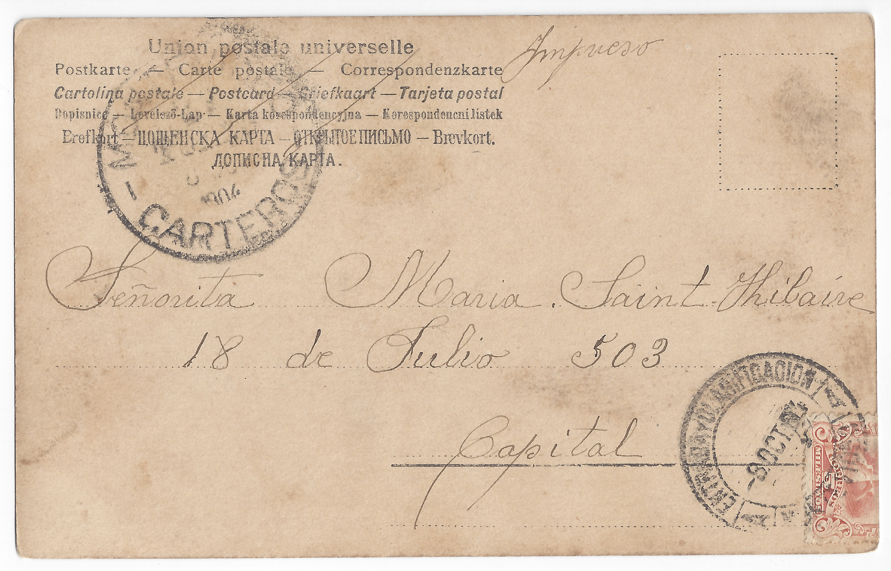

¿Que es la vida sin amor?
Lo que una pena sin llanto
Un ruiseñor sin canto
Y sin perfume una flor
Clotilde
Octubre 8/904
¿Que es la vida sin amor?
Lo que una pena sin llanto
Un ruiseñor sin canto
Y sin perfume una flor
Clotilde
Octubre 8/904

Impreso
Señorita Maria Saint Hilaire
18 de Julio 503
Capital